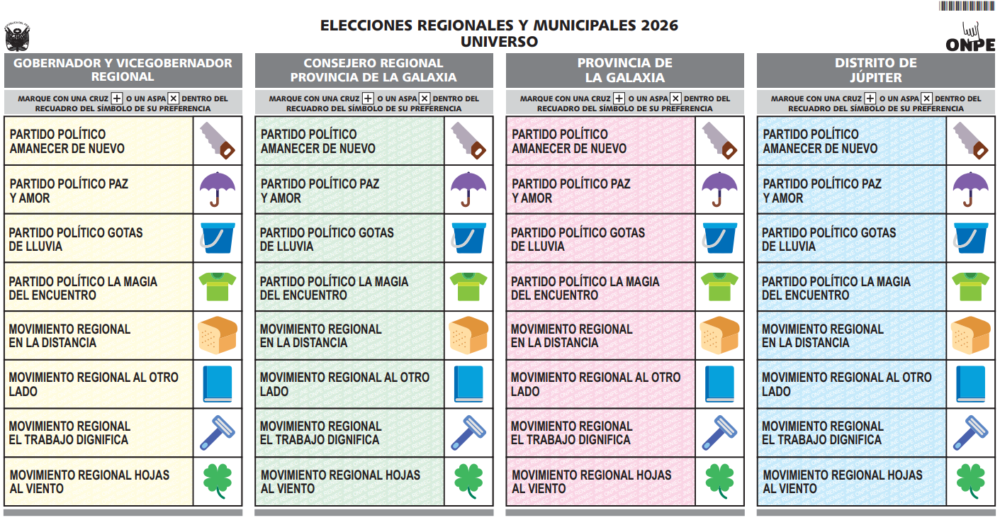

01
Identificación del elector
Ingrese datos ficticios para iniciar la simulación.
No corresponde a una consulta real del padrón.
06
Cédula electoral de referencia
Material visual proporcionado para complementar la simulación.

La cédula puede variar según la circunscripción. En las ERM 2026 la forma de la cédula depende del ámbito electoral.
07
Geolocalización
Permite visualizar la ubicación del dispositivo si el usuario autoriza el navegador.
Ubique su posición
Esta función no determina el local electoral asignado. Solo muestra la ubicación aproximada del dispositivo.
Latitud: — · Longitud: —
🗺️
El mapa aparecerá cuando autorice la geolocalización.
El mapa aparecerá cuando autorice la geolocalización.